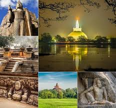
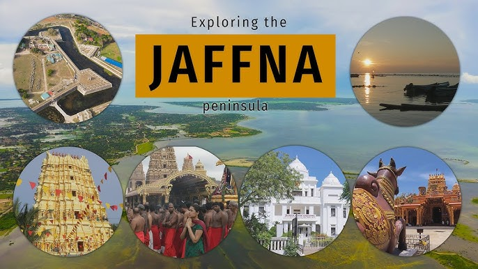
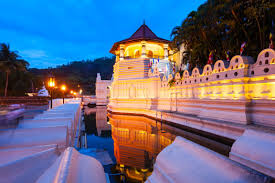

Anuradhapura is one of the ancient capitals of Sri Lanka, famous for its well-preserved ruins and historical significance.
Jaffna is known for its unique Tamil culture, beautiful temples, and delicious cuisine in Northern Sri Lanka.
Kandy is a major city in central Sri Lanka known for the sacred Temple of the Tooth Relic and beautiful scenery.
